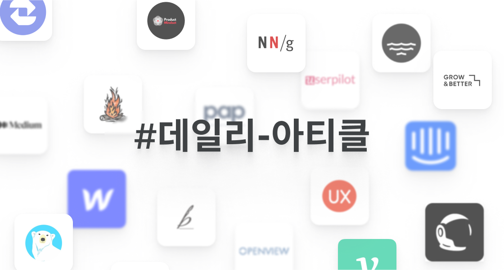
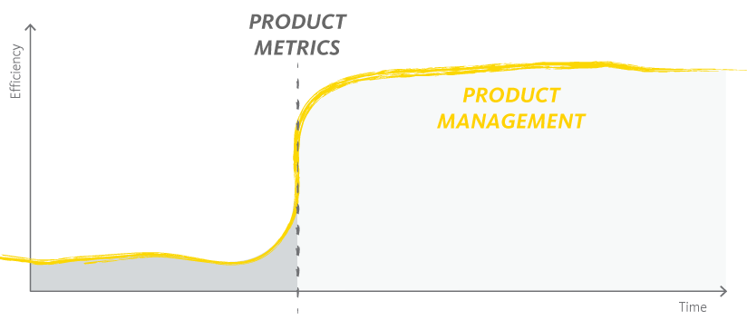
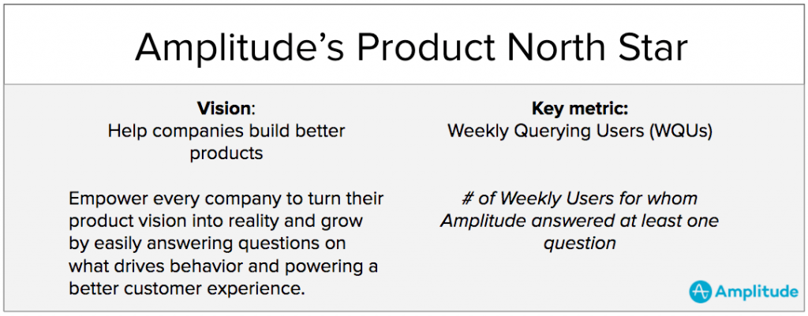
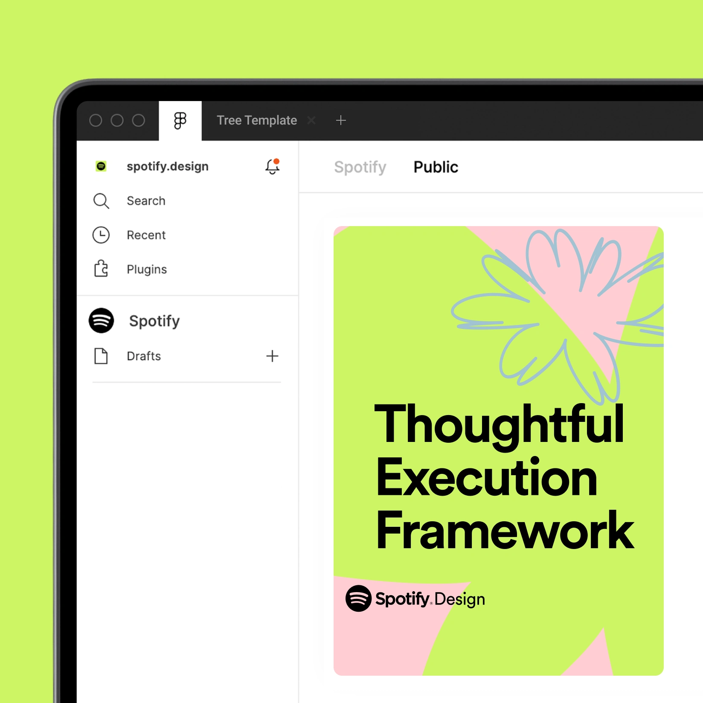
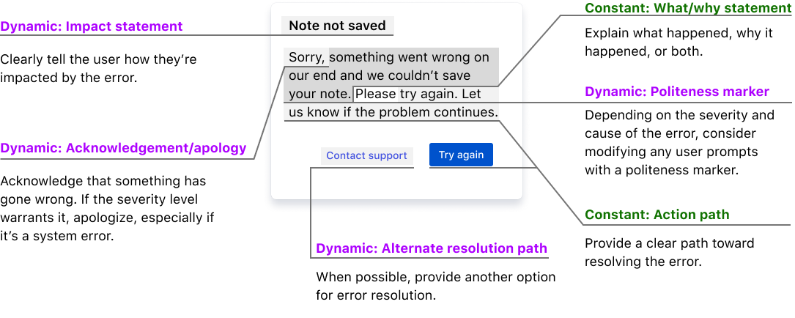
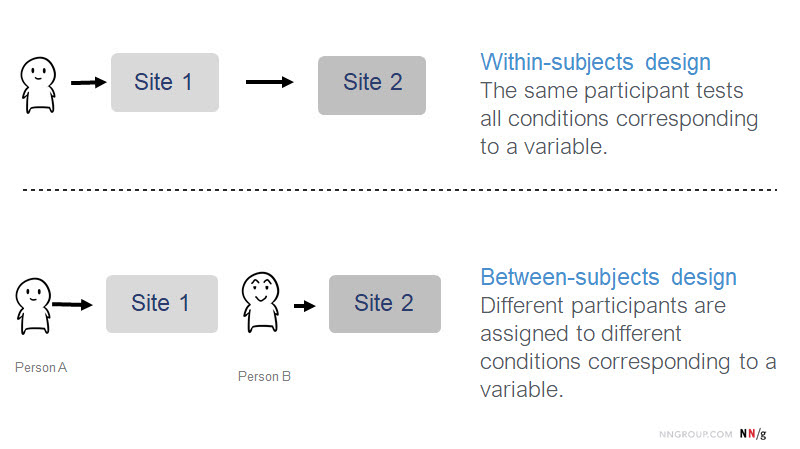

Curated Atricles
성장을 위한 아티클 요약 큐레이션
-

DESIGNER
일론 머스크가 소개하는 아이들이 반드시 알아야 할 인지 편향 50가지
번역 및 요약 👉 Elon Musk Thinks Every Child Should Learn About These 50 Cognitive Biases
🔗 이 글은 Elon Musk가 Twitter에 올린 쓰레드를 옮겨 소개한 아티클을 번역, 요약한 글입니다. ⚡️ 요약 일론 머스크는 여러 논란이 있지만 성공한 혁신가라는 점은 부인할 수 없습니다. 그는 이 성공의 주요한 요인 중 하나로 ‘제 1 원칙 사고’라고 부르는 명확하게 사고하는 법을 꼽았습니다. 급변하는 시장 상황에서 여러 상반되는 요구사항을 가지는 사용자를 상대로 올바른 결정을 내리기 위해서는 머릿 속에서 일어날 수 있는 오류나 편향을 피해야 합니다. 다음은 일론 머스크가 모든 어린이들에게...
-

WORK PROCESS
베조스의 의사결정 프레임워크
번역 및 요약 👉 Bezos Decision Making Framework
🔗 이 글은 Product Mindset님이 Substack에 올린 아티클을 번역, 요약한 글입니다. ⚡️ 요약 🔦 Jeff Bezos가 의사결정 하는 방법 Bezos는 의사결정을 두 가지로 구분합니다. Type 1: 되돌리기 거의 불가능한 결정. 회사를 매각하거나, 퇴사하거나, 절벽에서 떨어지는 행위 등. 행동하기 전에 반드시 충분히 생각해야 하며 가능한 여러 시나리오를 고려해 올바른 결정을 내려야 합니다. Type 2: 되돌리기 쉬운 결정. 사이드 프로젝트를 시작하거나, 새로운 서비스를 만들거나, 새로운 가격 정책을 선보이는 행위 등. Type 2...
-

WORK PROCESS
회사 보고서의 두 종류
요약 👉 회사 보고서의 두 종류
🔗 이 글은 Lee J. H님이 ㅍㅍㅅㅅ에 올린 아티클을 요약한 글입니다. ⚡️ 요약 회사 생활을 하면서 나의 디자인, 기획내용을 전달하거나 프로젝트 진행 내용을 보고하는 등 누군가에게 보고하는 상황이 종종 발생합니다. 이런 경우 회사에서 사용되는 보고서는 두 가지 목적으로 분류할 수 있습니다. 문제 해결을 위해 어떤 행동을 해야하며, 이를 위해 어떤것이 필요하다 문제 해결을 위해 어떤 행동을 했고, 이로 인해 어떤 성과가 났다 직장 상사와 하는 커뮤니케이션은 누구의 말이 옳은지 시시비비를...
-

PRODUCT
당신에게 필요한 단 하나의 프로덕트 전략 프레임워크
번역 및 요약 👉 The Only Product Strategy framework you need!
🔗 이 글은 Akash M Dubey님이 미디엄에 올린 아티클을 번역, 요약한 글입니다. ⚡️ 요약 당신에게 필요한 단 하나의 프로덕트 전략 프레임워크 아무리 프로덕트 전략을 세세하게 짜뒀다고 해도 전략의 본질만 남겨 몇 문장만으로 간소하고 명확하게 표현할 수 있어야 합니다. 그렇게 표현하지 못한다면, 그 전략에 중요한 포인트가 없거나 짚어내지 못하는것입니다. 목표한 성공을 달성하기 위해서는 최적의 길을 선택할 수 있도록 돕는 훌륭한 전략이 필요합니다. Geoffrey Moore의 Value proposition statement나 Positioning 프레임워크를 통해 다음과...
-

GROWTH
마이클 포터의 5가지 경쟁요인 프레임워크 (5 Forces)
번역 및 요약 👉 Porter's Five Forces Framework
🔗 이 글은 Product Mindset님이 Substack에 올린 아티클을 번역, 요약한 글입니다. ⚡️ 요약 프로덕트의 전략과 앞으로 수행할 로드맵을 결정하기 위해서는 프로덕트가 처해진 환경을 분석하는것이 중요합니다. 프로덕트의 경쟁 상황을 이해하는데 유용한 프레임워크인 마이클 포터의 5 Forces (5가지 경쟁요인) 프레임워크를 소개합니다. 마이클 포터의 5가지 경쟁요인을 잘 사용하기 위해서는 각 5가지 경쟁요인을 분석하고, 각자의 산업에 어떻게 적용될 수 있는지 알아봐야 합니다. 현실적으로 모든 분석 결과가 아름다운 모습을 가질수는 없지만, 산업을 이 프레임워크로 분석하는것은...
-

DESIGN
디자이너가 사용자 오류를 방지하는 방법
번역 및 요약 👉 How Designers Can Prevent User Errors
🔗 이 글은 Jordan Bowman님이 블로그에 올린 아티클을 번역, 요약한 글입니다. ⚡️ 요약 B2B 프로덕트는 사용자의 업무를 성공적으로 도와주기 위해 존재합니다 비즈니스 업무를 수행하는 사용자에겐 시스템에서 발생한 오류로 인해 사용자의 업무에 영향이 가기도 하고, 고객 비즈니스 전반에 악영향을 주기도 합니다. 이러한 사용자 오류를 B2B 프로덕트 디자이너로서 방지할 수 있는 방법은 무엇이 있을까요? 1. 오류를 사전에 방지하기 가드레일 설치하기 사용자가 잘못된 선택을 하지 않을 수 있도록 도움을 주는 제약사항을 제공합니다. 핸드폰...
-

DESIGNER
스페셜리스트 vs 제너럴리스트
요약 👉 스페셜리스트 vs 제너럴리스트
🔗 이 글은 백승엽님이 브런치에 올린 아티클을 읽고 적은 감상글입니다. 많은 사람들이 진로를 결정하거나 커리어의 다음 스텝을 고려할 때 한 가지 전문성을 더 파고들지, 더 폭넓은 방향으로 성장할지에 대해 고민한 적이 있을 것입니다. 제 나름의 결론은 스페셜리스트 먼저, 그 다음 제너럴리스트 였는데, 글의 저자분의 생각과 어느정도 일치하는 부분이 있는 것 같습니다. 먼저 취업이라는 좁은 관문을 뚫고 안정적으로 자리잡기 위해서는 처음엔 스페셜리스트의 뾰족함이 필요할 것입니다. 그리고 퇴직할 때 까지 실무를 하는...
-
WORK PROCESS
[Slack] 우리는 말 안장을 파는게 아니다
요약 👉 우리는 말 안장을 파는게 아니다
🔗 이 글은 지원준님이 브런치에 올린 아티클을 요약한 글입니다. ⚡️ 요약 [Slack] 우리는 말 안장을 파는게 아니다. 이 글은 Slack의 CEO가 Slack의 프리뷰 릴리즈 2주 전 사내에 전파한 내용(에 대한 번역글)입니다. Slack은 Slack이 만들어지기 이전에는 존재하지 않던 업무용 커뮤니케이션 SaaS 라는 새로운 시장을 타겟으로 만들어진 프로덕트입니다. 이 때문에 본인의 Painpoint를 잘 알고, 니즈를 설명할 수 있고, 어떤 프로덕트를 상상하는지 그려낼 수 있는 사용자는 없었습니다. Slack은 사람들이 ‘자신이 원한다고 믿는 것’들을...
-

PRODUCT
B2B 프로덕트 코호트 분석 제대로 하기
번역 및 요약 👉 B2B Cohort Analysis
🔗 이 글은 Clement Kao님이 미디엄에 올린 아티클을 번역, 요약한 글입니다. ⚡️ 요약 B2B 프로덕트는 B2C 프로덕트와 가지는 성향이 달라 B2C 프로덕트를 분석하던 방식을 사용할 경우 잘못된 분석을 하게 될 가능성이 있습니다. B2C 프로덕트와 B2B 프로덕트 사용자들은 크게 두 가지 다른점을 가지고 있습니다. 새로운 사용자가 계속해서 들어오지 않음 B2B 프로덕트는 ‘도입 시기’가 정해져 있는 경우가 많고, 한 번에 많은 사용자가 들어오는 날이 정해져 있습니다. 자주 사용하지 않음 B2C 프로덕트처럼 매일...
-

GROWTH
사용량 기반 가격 정책이 뜨는 이유
번역 및 요약 👉 Why is Usage-Based Pricing on the Rise? Our Study Reveals a Growing Trend
🔗 이 글은 Kyle Poyar님이 Openview에 올린 아티클을 번역, 요약한 글입니다. ⚡️ 요약 최근 SaaS 가격 모델링 방식 중 사용량 기반 가격 정책이 뜨고 있습니다. OpenView 조사 결과 지난 해 34%에서 올해 45%의 SaaS 회사가 사용량 기반 가격 정책을 어느정도 가지고 있다고 조사되었습니다. 이렇게 사용량 기반 가격 정책이 뜨고 있는 이유는 무엇일까요? 소프트웨어 구매에서 최종 사용자(end user)의 시대에 살고 있기 때문 기존 SaaS 프로덕트의 구매 방식이 점점 최종 사용자가 프로덕트를...
-

DESIGN
복잡한 애플리케이션에 적용되는 10가지 휴리스틱
번역 및 요약 👉 10 Usability Heuristics Applied to Complex Applications
🔗 이 글은 Kate Kaplan님이 NN Group에 올린 아티클을 번역, 요약한 글입니다. ⚡️ 요약 B2B 프로덕트는 기업 사용자의 다양한 업무적 요구사항을 충족하기 위해, 다루는 데이터 자체가 복잡하기 때문 등 다양한 이유로 복잡해지기 마련입니다. 복잡한 프로덕트를 디자인 하면서 놓칠 수 있는 10가지 휴리스틱을 소개합니다. 시스템 상태에 대한 가시성 (Visibility of System Status) 사용자의 행동에 대한 적절한 피드백은 가장 기본적인 디자인 가이드라인입니다. 가장 대표적인 피드백으로는 프로그레스 인디케이터를 꼽을 수 있습니다. 프로그레스 인디케이터는...
-

DESIGNER
당신 프로덕트의 진짜 가장 큰 경쟁자
번역 및 요약 👉 Your main competitor probably isn’t who you think it is
🔗 이 글은 Ryan Cornelius님이 미디엄에 올린 아티클을 번역, 요약한 글입니다. ⚡️ 요약 당신은 프로덕트의 가장 큰 경쟁자를 간과하고 있습니다. 만약 당신에게 가장 큰 경쟁자가 누구냐고 물어본다면 스타트업부터 대기업까지 당신이 경쟁자라고 생각하는 많은 기업들을 줄줄 읊을 수 있을지도 모릅니다. 기능 별로 누가 더 잘하고 있는지도 다 알고 있을 수 있습니다. 하지만 대부분의 경우에, 특히 세상에 없던 혁신적인 프로덕트를 만들어내는 중이라고 한다면 가장 큰 경쟁자는 어떤 ‘회사’가 아닙니다. 📌 당신의 가장...
-

WORK PROCESS
SaaS 프로덕트 릴리즈 노트 템플릿
번역 및 요약 👉 Release Notes Template for SaaS
🔗 이 글은 Userpilot Team이 미디엄에 올린 아티클을 번역, 요약한 글입니다. ⚡️ 요약 프로덕트의 새로운 기능에 대한 릴리즈 노트는 사용자 Engagement에 큰 영향을 줄 수 있는 요소입니다. 👀 잠깐, 릴리즈 노트란? SaaS 회사가 매 프로덕트 릴리즈에 제작하고 배포하는 기술 문서입니다. 릴리즈 노트는 계속 발전해갈 SaaS 프로덕트를 구매한 사용자에게 변경사항을 알려주고 고객의 목소리에 귀를 기울이고 있다고 알릴 수 있는 좋은 방법입니다. 📝 요약 릴리즈 노트에는 헤더, 개괄, 이슈 요약, 해결, 임팩트,...
-
![[Sequia] Data Informed 회사를 만드는 구성 요소](https://miro.medium.com/max/1400/1*UTYQygJ765uJarN_rwTZSw.png)
PRODUCT
[Sequia] Data Informed 회사를 만드는 구성 요소
번역 및 요약 👉 The Building Blocks of a Data-Informed Company
🔗 이 글은 Sequoia가 미디엄에 올린 아티클을 번역, 요약한 글입니다. ⚡️ 요약 데이터에 대한 중요성은 나날이 높아져가고 있습니다. 일부 회사들은 더 많은 A/B 테스팅을 하거나 실험을 통해 더 많이 프로덕트를 이터레이션 하고, 더 많은 릴리즈를 통해 더 빠른 프로덕트 성장을 이뤄내기도 했습니다. 여러 소스에서 수집된, 정형화 되지 않은 수많은 데이터들 속에서 인사이트를 성공적으로 발견할 수 있느냐가 회사의 경쟁력과 프로덕트의 혁신을 이끌어내기 시작했습니다. 어떻게 하면 우리 회사도 Data Informed Company가 될...
-

GROWTH
사용자를 화나지 않게 하면서 기능 제거하기
번역 및 요약 👉 Removing Features Without Pissing Off Your Users
🔗 이 글은 Richard Yang님이 미디엄에 올린 아티클을 번역, 요약한 글입니다. ⚡️ 요약 사용자를 화나지 않게 하면서 기능 제거하기 기능이 너무 많은 프로덕트는 대부분의 경우 UX를 저해합니다. 모두가 이를 알고 있지만 대부분의 프로덕트, 특히 B2B 프로덕트는 기능 비대 상태가 되어버리곤 합니다. 최 상위 가치를 가진 기업 고객들을 잃지는 않겠지만(보통 그들이 그 기능들을 요구했기 때문에), 일반적인 사용자 대부분에게 거리감을 두게 됩니다. 이런 경우 비싸고 비대해진 프로덕트가 커버하지 못하는 작은 핵심 영역을...
-

DESIGN
데이터 시각화 형태 고르는 법
요약 👉 데이터 시각화 형태 고르는 방법
🔗 이 글은 한봄소리님이 브런치에 올린 아티클을 요약한 글입니다. ⚡️ 요약 수집한 데이터를 상대방에게 표현할 때 어떤 시각화 방법을 선택해야 가장 잘 전달할 수 있을까요? 데이터를 시각화 하는 방법은 수없이 많지만, 목적에 맞는 차트는 생각보다 선택 할 종류가 제한되어 있습니다. 데이터 시각화 이론에서 가장 많이 활용되고 있는 표는 앤드류 아벨라(Andrew V. Abela)의 차트 선택 방법이 있습니다. 앤드류는 무엇을 보여주고 싶은지 목적에 따라 크게 비교(Comparison), 분포(Distribution), 구성(Comparison), 관계(relationship)의 카테고리로 차트를 구분하고...
-

DESIGNER
포트폴리오 작성에 가장 도움이 되는 프레임워크 : STAR
번역 및 요약 👉 STAR Interview Framework
🔗 이 글은 Product Mindset님이 Substack에 올린 아티클을 번역, 요약한 글입니다. ⚡️ 요약 포트폴리오 작성에 가장 도움이 되는 STAR 프레임워크 STAR 프레임워크는 내가 내린 의사결정의 배경과 이후 학습한 결과를 자연스럽게 보여줄 수 있는 프레임워크입니다. 일반적인 경우 How에 해당하는 내가 생각한 아이디어, 실행한 방법만 집중적으로 묘사하게되는 경우가 많은데, STAR 프레임워크를 사용한다면 내 포트폴리오를 읽게 될 면접관들에게 문제의 배경, 목표, 행동과 결과를 빠짐없이, 이해하기 쉬운 순서로 전달할 수 있게 됩니다. ⭐️ STAR...
-

WORK PROCESS
훌륭한 팀원의 조건- Strong Opinions, Weakly Held
요약 👉 훌륭한 팀원의 조건 - Strong Views, Weakly Held
🔗 이 글은 Kisang Pak님이 미디엄에 올린 아티클을 요약한 글입니다. ⚡️ 요약 훌륭한 팀원의 조건 - Strong Opinions, Weakly Held 실리콘 밸리의 많은 구성원들은 자기의견이 강한 사람들이 훌륭한 인재라는 일반적인 견해가 있습니다. 실리콘 밸리의 테크 회사들은 불확실한 IT 시장에서 새로운 제품을 기획하고 만들어나가는것이 주된 업무입니다. 그리고 이런 제품 개발 과정은 끊임없는 결정의 연속입니다. 소프트웨어 아키텍쳐부터 홈페이지 버튼 색깔에 대한 결정까지 서로 끊임없이 토론하고 대화합니다. 이 때 강한 의견을 가진 사람이...
-

PRODUCT
잘못된 해석을 유도하는 통계 자료
번역 및 요약 👉 How Stats can Mislead you
🔗 이 글은 SalRite님이 미디엄에 올린 아티클을 번역, 요약한 글입니다. ⚡️ 요약 잘못된 해석을 유도하는 통계 자료. 어떤 상황에서 통계 자료를 잘못 해석할 수 있을까요? 통계적 유의성이 있다는 것이 실제로 유의미한 내용이라는 말은 아닙니다. 분석 결과가 통계적 유의성을 확보했더라도 샘플이 모집단을 적절히 대변하지 못할 수도, 리스크가 너무 커서 1%의 오차라도 용납할 수 없을수도 있습니다. 잘못된 도표를 사용하는 경우. Y축이 전체가 보여야 할 때 숨기거나 숨겨야 할 때 전체를 보이도록 하거나,...
-

GROWTH
B2B SaaS 스타트업이 첫 10개 고객사 만드는 법
번역 및 요약 👉 B2B SaaS 스타트업이 첫 10개 고객사 만드는 법
🔗 이 글은 Christopher Chae님이 릴레잇 블로그에 올린 아티클을 요약한 글입니다. ⚡️ 요약 B2B 프로덕트를 세일즈를 하려면 어디서부터 시작해야할 지 막막할 때가 있습니다. B2B SaaS 프로덕트를 검증하고 싶은데, 어떤 고객이 도와줄 수 있을까요? 주변 잠재고객(Lead)에게 연락하기 첫 고객을 개발해야 하는 관문에 있는 스타트업은 PMF(Product Market Fit)를 찾는 과정일 것입니다. 시장의 니즈를 확인하는 가장 손쉬운 방법은 바로 주변 네트워크를 활용하는 것입니다. 가장 가까운 네트워크에서부터 내 프로덕트의 PMF를 검증해보세요. 랜딩 페이지 만들기...
-

RESOURCES
복잡한 데이터 테이블 디자인을 위한 리소스 모음
번역 및 요약 👉 Enterprise UX: essential resources to design complex data tables
🔗 이 글은 Stephan Walter님이 블로그에 올린 리소스 소개 글을 번역, 요약한 글입니다. ⚡️ 요약 B2B SaaS 프로덕트에서 가장 많이 사용되는 컴포넌트 중 하나는 테이블입니다. 제공하는 내용과 기능이 복잡한 데이터 테이블을 디자인 하기 위해서는 고려해야 할 점이 많습니다. 복잡한 데이터 테이블을 디자인 하기 위한 디자인 리소스 모음 페이지입니다. 각 리소스들이 조명하는 분야가 다양하니, 데이터 테이블을 디자인하는데 필요한 다양한 고민들을 해결할 단서들을 얻을 수 있겠습니다. 데이터 테이블의 기본 구조 데이터 테이블의...
-

WORK PROCESS
PM/PO가 주의해야 할 4가지 의사결정 편향
요약 👉 좋은 PM이라면 늘 주의해야 할 4가지 의사결정 편향
🔗 이 글은 김영욱님이 브런치에 올린 아티클을 요약한 글입니다. ⚡️ 요약 불확실성이 가득한 비즈니스 세상에서 PM/PO가 의사결정할 때 꾸준히 주의하고 극복해야 하는 4가지 인지편향을 소개합니다. 1. 확증 편향 (Confirmation Bias) 가장 흔향 편향입니다 자신이 옳다고 여기는 정보만 받아들이고 신념과 일치하지 않는 정보는 무시하는 경향 검색, 추천 콘텐츠에서 개인화가 발달하면서 내 신념과 연관된 정보나 광고가 지속적으로 노출되면서 확증 편항은 더 빠져나오기 힘든 성향을 가집니다 사용자에게 던지는 질문을 내가 옳다고 생각하는바를 유도하는...
-
GROWTH
Free Trial SaaS 기업 600개를 설문하고 배운 10가지
번역 및 요약 👉 Free Trial SaaS 기업 600개를 설문하고 배운 10가지
🔗 이 글은 Christopher Chae님이 릴레잇 블로그에 올린 아티클을 요약한 글입니다. ⚡️ 요약 Free Trial SaaS 기업 600개를 설문하고 배운 10가지 Product-Led Growth SaaS 프로덕트는 Free Trial과 Freemium 을 사용해 Lead를 유도하는 경우가 많습니다. 그 중 Free Trial을 실행하고 있는 SaaS 기업을 설문조사하여 분석한 결과를 Relate에서 번역을 제공 해주셨습니다. 연간 계약이 최고다 로고 리텐션(‘고객사’ 유지)은 90%+ 이상으로 목표를 설정하라 SMB < Mid-market 혹은 Enterprise 100-140% NDR (Net Dollar Retention)을 목표로...
-

DESIGN
목표에 맞는 UX 리서치 방법 선정하기
번역 및 요약 👉 The Best UX Research Methods in a Pinch
🔗 이 글은 Jordan Bowman님이 블로그에 올린 아티클을 번역, 요약한 글입니다. ⚡️ 요약 어떤 상황에 어떤 UX 리서치 방법론을 사용해야 할까? 발견하고자 하는 리서치 결과가 매번 다르기 때문에 각 상황에 가장 효율적인 UX 리서치 방법론이 필요합니다. 이 아티클에서는 다음 6가지 방법을 사용할 상황을 안내합니다. 어떤 상황에 어떤 방법론을 사용해야 하는지 알기 위해서는 우리가 알아내고자 하는것이 무엇인지, 목표가 무엇인지, 어떤 문제를 해결하려고 하는지 스스로에게 질문해야 합니다. 1. 사용자 인터뷰 (User interview)...
-

DESIGNER
직장 필살기: 질문의 기술
요약 👉 직장 필살기: 질문의 기술
🔗 이 글은 김형석님이 브런치에 올린 아티클을 요약한 글입니다. ⚡️ 요약 직장에서 사랑받는 주니어, 일잘러가 되는 방법: 질문의 기술 질문하는것은 매우 중요합니다. 하지만 무제한적인 호기심은 가장 먼저 스스로에게 물어야 하고, 다른 사람에게 질문을 할 때에는 그 목적이 분명해야 합니다. 질문을 하는 제 1 목적은 ‘모르는 것에 대한 답‘을 얻기 위함입니다. 아는 것도 물어보고, 모르는 것도 물어보는것은 민폐입니다. 바쁘디 바쁜 동료의 시간을 의미없이 사용해버리기만 합니다. 책임을 회피하기 위해 질문을 이용하는것은 생각하는...
-
![[Coinbase] 코인베이스의 의사결정 방법 (RAPID)](https://img.glivery.co.kr/XupnP4UR6YhxWsz5f1S31c6fCtw2/0_S91p0y9p0_O7ciGX-1634286185222.png)
WORK PROCESS
[Coinbase] 코인베이스의 의사결정 방법 (RAPID)
요약 👉 코인베이스의 의사 결정 방법
🔗 이 글은 Sacony님이 글리버리에 올린 아티클을 요약한 글입니다. ⚡️ 요약 코인베이스는 어떻게 의사결정 할까? 코인베이스는 사내 정치와 관료적인 의사결정 체계의 한계를 극복하고 노이즈를 줄여서 효율적인 결정을 위해 두 가지 방법을 사용합니다. 두 방법 모두 구글닥과 같이 모두가 함께 확인할 수 있고, 동시에 협업이 가능한 문서 형태로 커뮤니케이션 합니다. 1️⃣ Problem / Proposed Solution 일반적인 의사결정할 때 노이즈를 줄이는데 유용한 도구 문제와 제안 솔루션이 15분 안에 쓸 수 있게 간단하게...
-
![[쿠팡] 테스트 결과가 예상과 다를 때](https://t1.daumcdn.net/brunch/service/user/89Po/image/nOsURej53UFAD3jlwMMvyEoPcRM.png)
PRODUCT
[쿠팡] 테스트 결과가 예상과 다를 때
요약 👉 쿠팡 UX Club 3. 테스트 결과가 예상과 다를 때
🔗 이 글은 쿠팡 디자인이 브런치에 올린 아티클을 요약한 글입니다. ⚡️ 요약 A/B 테스트에서 솔루션의 성과가 기대와 다를 경우, 어떻게 해야 할까요? 문제를 명확하게 가정했고, 이를 검증하기 위한 가설과 솔루션을 마련했다면, 개선을 위한 솔루션이 제대로 가정했던 문제를 해결하는지를 확인하기 위해 테스트를 진행합니다. 테스트 결과는 미리 설정해 둔 주요 지표가 어떤 값으로 변화했는지에 따라 테스트의 성공 여부를 판단하게 됩니다. 만약 테스트 결과가 예상과 다를 경우 기존에 정의한 문제와 가설, 솔루션이 제대로...
-

GROWTH
SaaS 온보딩 이메일 템플릿 훔치기
번역 및 요약 👉 5 SaaS customer onboarding templates to steal
🔗 이 글은 Val Geisler님이 블로그에 올린 아티클을 번역, 요약한 글입니다. ⚡️ 요약 예술가처럼 SaaS 온보딩 이메일 템플릿 훔치기 아래 6가지 원칙을 실현할 수 있는 온보딩 이메일용 템플릿 예시를 제공합니다. 원칙 1️⃣ : 첫 환영 이메일을 커스텀 하기 Groove에 가입한 직후 받는 이메일의 예시에서 ‘왜 가입했는지’에 대한 질문을 포함하였다 이를 통해 각 고객이 원하는 ‘성공’이 뭔지 알 수 있게 되고, 고객과 더 깊은 관계를 맺을 수 있게 되었다 원칙2️⃣ :...
-

DESIGN
다국어 프로덕트에서 날짜 표기는 어떻게 해야 할까?
번역 및 요약 👉 What's the best way to display dates to international users
🔗 이 글은 uxdesign.cc가 미디엄에 올린 아티클을 번역, 요약한 글입니다. ⚡️ 요약 다국어 프로덕트에서 날짜 표기는 어떻게 해야 할까? B2B SaaS 프로덕트는 글로벌로 진출하기 용이한 프로덕트입니다. SaaS에서 날짜는 자주 사용되는 컴포넌트인데, 국가 별로 날짜를 표기하는 법은 각자 상이합니다. 다국어 프로덕트에서 날짜는 어떤 방법으로 표기해야 할까요? 각 지역 별로 주로 사용하는 날짜 표기법은 다음과 같습니다. 년-월-일(2021-10-25) :: 주로 동북아시아 일-월-년(25-10-2021) :: 남미, 아시아, 오세아니아 월-일-년(10-25-2021) :: 북미 이외에도 여러 방식을 혼용하는...
-

DESIGNER
불만을 없앤다고 만족이 생기는게 아니다
요약 👉 불만을 없앤다고 만족하지는 않는다
🔗 이 글은 박진우님이 브런치에 올린 아티클을 요약한 글입니다. ⚡️ 요약 불만을 없앤다고 만족이 생기는게 아니다 불만이 생길 수 있는 요소들을 모두 제거한 Friction-less 한 프로덕트를 만든다고 해서 그 프로덕트가 가장 좋은 프로덕트 일까요? 답은 ‘아니오’ 입니다. 불만 요소를 모두 제거한다고 해서 없던 만족이 생기는게 아니기 때문입니다. 우리 마음 속에선 불만과 만족을 처리하는 방식이 다르기 때문입니다. 불만은 보통 비교에서 기반합니다. 반면 만족은 그것이 가지는 독특함에서 옵니다. 이 개념은 ‘카노 모델‘과도...
-
![[세탁특공대] PM/PO 역할 정의](https://washswat.notion.site/image/https%3A%2F%2Fs3-us-west-2.amazonaws.com%2Fsecure.notion-static.com%2Ff1d5eaec-4779-4659-ac11-8409737503ca%2FScreen_Shot_2021-07-27_at_12.59.37_AM.png?table=block&id=2d109576-9b2d-4b87-972b-e4a3c7b57929&spaceId=965c7381-021e-4ca5-89bc-32c0339111e0&width=1920&userId=&cache=v2)
WORK PROCESS
[세탁특공대] PM/PO 역할 정의
요약 👉 Defines of PM/PO
🔗 이 글은 세탁 특공대가 노션에 올린 아티클을 요약한 글입니다. ⚡️ 요약 세탁특공대의 PM/PO 역할에 대한 정의 세탁특공대가 PM/PO 역할을 정의한 노션 페이지입니다. 많은 회사에서 PM과 PO에 대한 역할을 명확하게 구분하지 않고/못하고 모호하게 사용하고 있습니다. 이 때문에 일을 하다보면 이 일이 PM의 일인지, PO의 일인지 명확하게 나뉘지 않아 R&R을 나누거나 커뮤니케이션에 리소스 낭비가 되는 경우가 있습니다. 세탁특공대는 두 직무를 담당하는 사람의 역할을 명확히 하고, 두 직무와 협업하는 다른 사람의 기대를...
-

PRODUCT
프로덕트 분석 툴을 이용해 사용자 Friction 없애는 방법
번역 및 요약 👉 How to Use Product Analytics Tools to Reduce User Friction
🔗 이 글은 Userpilot Team이 미디엄에 올린 아티클을 번역, 요약한 글입니다. ⚡️ 요약 프로덕트 분석 툴을 활용해 User Friction 제거하기 데이터 기반 UX의 대표적인 방법으로는 프로덕트 분석 툴으로 데이터를 활용하여 Frictionless한 프로덕트를 만드는 것이 있습니다. 프로덕트 분석 툴은 다음과 같은 방법으로 User Friction의 원인을 밝히는데 도움을 줄 수 있습니다. 프로덕트 사용성을 테스트 하기 기능 사용률 확인하기 User Journey에서 과정을 따라가고 Churn을 발생시키는 지표를 확인하기 사용자 세그먼트 별 트렌드를 그리기 기능과...
-

GROWTH
인접 사용자 이론
번역 및 요약 👉 인스타그램을 10억 사용자로 만든 인접 사용자 이론
🔗 이 글은 xguru님이 GeekNews에 올린 아티클을 요약한 글입니다. ⚡️ 요약 인스타그램을 10억 사용자로 만든 ‘인접 사용자 이론’ 사용자 4억명에서 10억명이 된 3년간 Growth팀 헤드였던 Bangaly의 경험을 공유한 글입니다. 인접 사용자(The Adjacent User)는 제품을 알고, 사용해봤지만 참여하지는 못하는 사용자를 의미합니다. 인접 사용자가 사용자가 되지 못하는것은 제품 포지셔닝이나 제품을 경험하는데 장벽이 있음을 의미합니다. 제품의 Growth를 위해서는 지속적으로 인접 사용자를 정의하고, 그들이 뭘 어려워 하는지를 이해하고 공감하면서 문제를 해결해야 합니다. 제품을 여러...
-

DESIGN
옵션을 숨길까, Disable 처리할까?
번역 및 요약 👉 Hide vs Disable — The Hidden Truth
🔗 이 글은 Aashiq Babu님이 미디엄에 올린 아티클을 번역, 요약한 글입니다. ⚡️ 요약 대시보드를 디자인 하면서 사용자의 권한이나 태스크의 상태에 따라 몇몇 옵션을 사용하지 못하는 경우가 발생하게 됩니다. 이 떄 메뉴에서 해당 옵션을 숨기는게 좋을까요, Disable 처리하는게 좋을까요? Disable 처리했을때는, 장 해당 옵션의 발견 가능성을 높이고, 학습 용이성을 높이는 장점이 있지만 단 인지 부하가 높을 수 있고, 클릭 가능한 요소로 오해할 수 있으며 접근성 측면(WCAG)에서 충분한 대비를 주지 못한다는 단점이...
-

DESIGNER
SaaS 프로덕트의 종류 (PLG, SLG,…)
번역 및 요약 👉 How to Spot a Product-Led Company
🔗 이 글은 Michelle Yick님이 미디엄에 올린 아티클을 번역, 요약한 글입니다. ⚡️ 요약 최근 성공적으로 성장한 SaaS 프로덕트를 이야기할 때 빠질 수 없는 개념이 ‘Product-led’ 입니다. Product-led를 간단히 설명하자면 프로덕트의 매력을 중심으로 프로덕트와 비즈니스를 성장시키는 프레임워크입니다. 하지만 모든 SaaS 비즈니스가 Product-led는 아닙니다. Product-led 가 아닌 다른 성장 방식으로는 어떤 것들이 있을까요? 💰 Sales-led 구매자와 좋은 고객 관계를 만드는데 투자합니다. 새로운 고객을 유치하는게 가장 어려운 부분입니다. 전환 비용이 커서 Churn 하기...
-

WORK PROCESS
크래프톤 웨이에서 배운 사람에 관한 61가지
요약 👉 크래프톤 웨이에서 배운 사람에 관한 61가지
🔗 이 글은 ASH님이 브런치에 올린 아티클을 요약한 글입니다. ⚡️ 요약 크래프톤 웨이’에서 배운 사람에 관한 61가지 크래프톤 웨이는 크래프톤이라는 스타트업이 어떻게 성공했는지 그 비결에 대해 이야기 하는 책이 아니라 창업이 어떻게 이루어 졌으며, 어떤 경영 원칙을 세웠고, 누가 어떤 조직을 맡고 떠났으며, 어떤 고난을 겪었고 어떻게 성공을 했는지 있는 그대로 이야기하는 역사서와 같은 책입니다. ASH님이 뽑은 61가지 인사이트 중 일부를 발췌합니다. 우리에겐 노동자 대신 인재가 필요합니다. 노동자와 인재의 근본적인...
-

PRODUCT
데이터 분석 기본 지표: DAU, WAU, MAU, rolling metrics
요약 👉 데이터 분석에 기본이 되는 지표
🔗 이 글은 Jinhee Park님이 브런치에 올린 아티클을 요약한 글입니다. ⚡️ 요약 기본적인 데이터 분석 지표: DAU, WAU, MAU, Rolling Metrics 마케터, PM이 가장 기본적으로 보는 프로덕트 데이터 지표로는 활성 사용자 수(Active Users)를 꼽을 수 있습니다. DAU(Daily Active Users), WAU(Weelky Active Users), MAU(Monthly Active Users)는 활성 사용자를 일 단위로 볼 것인지, 주 단위, 월 단위로 볼 것인지에 따라 나눠진 지표입니다. DAU, WAU, MAU가 유의미한 지표가 되려면 어떤 사용자가 ‘활성 사용자(Active...
-

GROWTH
6가지 Product-led SaaS 온보딩 레슨
번역 및 요약 👉 6 Product-Led SaaS Onboarding Lessons (With 8 Great Examples)
🔗 이 글은 Victor Eduoh님이 Openview에 올린 아티클을 번역, 요약한 글입니다. ⚡️ 요약 6가지 Product-led SaaS 온보딩 레슨 Product-led Growth를 지향하는 프로덕트라면 Freemium이나 Trial 비즈니스 모델으로 새로운 사용자를 획득하고 있을 것입니다. 하지만 적절한 사용자 온보딩이 준비되어있지 않으면 새로 획득된 사용자는 다시 돌아오지 않을 수도 있습니다. 40-60%의 사용자들은 SaaS 앱을 한 번만 열어보고 다시 돌아오지 않는다고 합니다. Slack, Keap, Calendly와 같은 성공한 PLG SaaS의 예시와 함께 좋은 사용자 온보딩 레슨을 볼...
-

DESIGNER
연봉협상을 위한 10계명
번역 및 요약 👉 The 10 commandments of salary negotiation
🔗 이 글은 Lenny님이 Substack에 올린 아티클을 번역, 요약한 글입니다. ⚡️ 요약 연봉협상을 위한 10계명 연봉협상은 언제나 어려운 일입니다. 내가 협상을 하는건지, 통보를 받는것인지.. 이직할 때 더 나은 연봉협상을 위한 10계명입니다. 1. 협상은 생각보다 일찍 시작한다 첫 만남에서 원하는 금액을 물어보는 경우가 있는데, 절대 숫자를 얘기해선 안됩니다. 오히려 역으로 예산이 어느정도인지 물어보고 내 예상과 일치하는지 확인하세요. 2. 인터뷰에서 정보를 더 얻기 인터뷰할 땐 답변만 하는것이 아니라 정보도 얻어야 합니다. 지금...
-

WORK PROCESS
제품 방향성을 알려주는 사용자 인터뷰하는 방법
요약 👉 제품 방향성을 알려주는 사용자 인터뷰하는 방법
🔗 이 글은 Disquite 팀이 커뮤니티에 올린 아티클을 번역, 요약한 글입니다. ⚡️ 요약 사용자의 행동 데이터나 사용자의 피드백은 현재 솔루션이 사용자의 문제를 해결해 주는지, Frictionless 한 사용 경험을 제공하는지를 알려주긴 하지만 제품의 방향성을 어떻게 해야 하는지는 알려주지 않습니다. 제품의 방향성을 알기 위해서는 사용자 인터뷰가 필요합니다. 사용자 인터뷰를 할 때 유의해야 할 점은 다음과 같습니다. 사용자의 경험과 현재 painpoint에 대해 질문해야 합니다. 사용자가 현재 겪고 있는 문제와 그 문제를 해결하기 위해...
-

PRODUCT
중요한 지표
번역 및 요약 👉 Metric That Matters
🔗 이 글은 Angshuman Gupta님이 미디엄에 올린 아티클을 번역, 요약한 글입니다. ⚡️ 요약 어떤 ‘지표’가 중요할까요? 우리가 만들고 출시하게 되는 기능은 어떤 문제를 해결하기 위한 것이고, 그 문제는 회사의 목표와 맥락을 같이해야 합니다. 이 말은 즉 기능의 성공은 회사의 목표에 기여하는 바를 통해 측정할 수 있다는 것입니다. 지표에는 여러 종류가 있을 수 있습니다. 주요 지표 (Primary Metric / Goal Metric / North-Star Metric) 여러 보조 지표를 포괄하는 지표 기능의 목표를...
-
GROWTH
점진적 공개
번역 및 요약 👉 Progressive Disclosure
🔗 이 글은 Jakob Nielson님이 NN Group 블로그에 올린 아티클을 번역, 요약한 글입니다. ⚡️ 요약 🤔 사용자는 모든 요구사항을 처리할 수 있는 강력한 기능과 통제감을 원하기도 하지만 현재 요구사항에 가장 적합한 몇 가지만 볼 수 있고 추가적으로 학습하지 않아도 알 수 있는 단순함을 동시에 원하기 때문에 복잡한 프로덕트를 디자인 하는 우리는 종종 딜레마에 직면하게 됩니다. 💎 점진적 공개 이 때 사용되는 ‘점진적 공개(Progressive Disclosure)‘는 고급 기능이나 거의 사용되지 않는 기능을...
-
![[Kimchihill] B2B 회사 경영진에게 우리가 하는 질문들 - 주관적 해설서](https://i0.wp.com/kimchihill.com/wp-content/uploads/2021/09/img_0176.jpg)
DESIGNER
[Kimchihill] B2B 회사 경영진에게 우리가 하는 질문들 - 주관적 해설서
요약 👉 B2B 회사 경영진에게 우리가 하는 질문들 - 주관적 해설서
🔗 이 글은 이상희님이 블로그에 올린 아티클을 요약한 글입니다. ⚡️ 요약 알토스 벤처스의 Han Kim 대표님이 B2B 회사 경영진에게 던지는 질문에 대해 Sendbird의 Country Manager 이상희님의 주관적인 답변이 담긴 글입니다. Sendbird가 성공을 위해 달려가고 있는 과정과 생각을 엿볼 수 있으니 본인의 프로덕트/회사가 답할 수 있는 내용과 어떻게 다른지 생각해보는것도 도움이 될 것 같습니다. 6가지 질문은 다음과 같습니다. 왜 이 제품을 쓰나요? 이 제품은 어떤 문제를 해결하죠? 타겍 고객이 누구인지? 어떤...
-
![[토스] 토스가 보이스톤 메이커를 만들게 된 배경](https://t1.daumcdn.net/brunch/service/user/1SwI/image/lpR07slC6MzgVjC_BAuUkMfmSPc.png)
WORK PROCESS
[토스] 토스가 보이스톤 메이커를 만들게 된 배경
요약 👉 토스가 보이스톤 메이커를 만들게 된 배경
🔗 이 글은 김자유(김강령)님이 브런치에 올린 아티클을 요약한 글입니다. ⚡️ 요약 지난 토스의 Simplicity 21 컨퍼런스에서 발표된 적 있는 토스 보이스톤 메이커를 만들게된 과정에 대한 글입니다. 팀이 작을때는 내가 주로 작성하는 어투만 프로덕트에 반영되기 때문에 프로덕트의 보이스톤을 일관되게 유지하기가 더 쉽습니다. 하지만 팀이 커지고 많은 사람들이 프로덕트에 사용되는 레이블을 작성하기 시작하면서 보이스톤을 일관되게 유지하기 어려워지기 시작합니다. 토스에서도 프로덕트 디자이너, UX Writer, PO, Legal 등 다양한 이해관계자가 레이블에 영향을 주고 있다보니...
-
![[오일나우] 프로모션 없이 UX만으로 신규 가입 유저를 235% 늘리는 방법](https://miro.medium.com/max/2400/1*t0qqRK7gf4EDVGhOjw7Iuw.jpeg)
GROWTH
[오일나우] 프로모션 없이 UX만으로 신규 가입 유저를 235% 늘리는 방법
요약 👉 프로모션 없이 UX만으로 신규 가입 유저를 235% 늘리는 방법
🔗 이 글은 오일나우의 지연님이 미디엄에 올린 아티클을 요약한 글입니다. ⚡️ 요약 오일나우가 UX 개선만으로 회원가입 퍼널 전환률을 높인 사례입니다. 오일나우는 처음엔 핵심 저니를 짧게 구성하고자 회원가입 단계를 뒤로 미뤘었는데요, 시간이 지나자 리텐션에 유리한 로그인이 필요한 행동들을 유도하기가 힘들다는 한계에 부딪혔습니다. 회원가입 전환율을 위해서는 근처 저렴한 주유소를 찾아준다는 오일나우의 핵심 가치를 전달하기 위해 딱딱한 회원가입 프로세스 대신 월 주유비의 10%를 절약해준다는 핵심가치를 숫자로 확연하게 느낄 수 있도록 하는 과정을 먼저...
-
DESIGNER
[채널톡] 우리 회사만의 방식으로 마케팅 하는 회사가 성공할 수 있다
요약 👉 우리 회사만의 방식으로 마케팅 하는 회사가 성공할 수 있다
🔗 이 글은 Josh님이 페이스북에 올린 포스트를 요약한 글입니다. ⚡️ 요약 채널톡이 채널톡 마케팅에 적용하기 위해 B2B 마케팅 사례를 분석한 결과에 대한 경험을 공유했습니다. 잘 된 스타트업, 최근 SaaS 붐을 이끌고 있는 사례, 유명한 B2C 서비스까지 다양하게 살펴 본 결과, 공통점은 거의 없고, 두 가지 공통점만 발견할 수 있었다고 합니다. 시장에서 두드러지게 뛰어난 제품(Outstanding Product) 뛰어난 제품에 기반한 입소문(Word Of Mouth) 모두들 다른 방식을 사용했음에도 불구하고 결과적으로는 성공한 사례가 된것을...
-

WORK PROCESS
데이터로 문제를 해결하기 위해서는? (feat. ICE, PSW 프레임워크)
번역 및 요약 👉 데이터로 문제를 해결하기 위해서는?
🔗 이 글은 마미새(마케팅에 미친 새싹들)님이 브런치에 올린 아티클을 요약한 글입니다. ⚡️ 요약 데이터 사이언티스트 하용호님의 인터뷰 글입니다. 하용호님은 스스로 하는 일을 데이터로 회사의 문제를 해결해주는 사람이라고 합니다. ‘데이터’라는 점을 빼면 디자이너가 하는 일과 맥락을 같이한다고 볼 수 있겠습니다. 회사들은 데이터 사이언티스트에게 어려운 문제를 던져주기 마련입니다. 눈에 보이는것 뒤에 숨은 문제까지 발견할 수 있어야 진짜 문제를 발견하고 해결할 수 있습니다. 지금 바라보는 문제가 진짜로 해결할 만 한 문제인지 판별하기 위해...
-

WORK PROCESS
UX Writer는 어떤 역할을 하는가
요약 👉 쉬운 단어를 썼더니 고객이 사라졌어요
🔗 이 글은 박창선님이 브런치에 올린 아티클을 요약한 글입니다. ⚡️ 요약 화면에 정보가 많은 B2B 프로덕트를 디자인 하는 과정에서는 수 없이 많은 레이블을 만들어야 합니다. 점점 찾는 기업이 많아지는 그 UX Writer가 우리 회사에도 있었으면 하고 바라지만 당분간은 이루어질 수 없는 꿈으로 남아있을 확률이 높은 것 같습니다. UX Writer 없이도 B2B 프로덕트의 레이블을 작성할 때 꼭 유념해야 할 항목들을 잘 꼽은 글입니다. 책임질 수 있는 언어를 사용하고, 브랜드 이미지에 결맞춤이...
-
PRODUCT
스타트업을 위한 실험과 가설 개념 설명
요약 👉 스타트업을 위한 실험과 가설 개념 설명
🔗 이 글은 김민우님이 블로그에 올린 아티클을 요약한 글입니다. ⚡️ 요약 최근 데이터 기반 의사결정, 사용자 행동 분석 등 데이터 분석을 활용하는 곳이 많아졌습니다. 주변에서 많이 이야기 하는 ‘실험’과 ‘가설’에 대한 개념을 얼마나 정확하게 알고 있나요? 실험은 몰랐던 것을 알아내기 위해 (=지식을 얻기 위해) 하는 활동입니다. 만약 실험으로 뭔가를 알아내지 못했다면 잘못된 실험입니다. 가설은 반증할 수 있도록 구체적인 형태와 숫자로 표현된 문장입니다. 가설과 유사한 의미로 사용되는 가정은 반증 가능할 정도로...
-

GROWTH
B2B SaaS 첫 고객으로 대기업이 좋을까 SMB가 좋을까?
번역 및 요약 👉 Enterprises vs SMBs: Who’s the Better Customer for B2B SaaS Startups?
🔗 이 글은 David Sacks님이 미디엄에 올린 아티클을 번역, 요약한 글입니다. ⚡️ 요약 첫 B2B SaaS 첫 고객으로는 대기업을 타겟으로 하는 것이 좋을까요 SMB를 타겟으로 하는 것이 좋을까요? 저자는 이전에는 큰 기업이 더 가치가 높은 고객이라고 생각했지만, 새로운 시각에서는 빠르게 딜을 마무리할 수 있는 SMB가 PMF를 찾는 초기 기업 입장에서 더 좋다는 관점이라고 합니다. 기존 대기업이 더 좋은 고객이 될 수 있는 이유와, SMB가 더 좋은 고객이 될 수 있는...
-

DESIGN
Informative vs Decisional 모달 디자인하기
번역 및 요약 👉 Informative & Decisional
🔗 이 글은 Linzi Berry님이 미디엄에 올린 아티클을 번역, 요약한 글입니다. ⚡️ 요약 B2B 프로덕트를 사용하는 플로우에서는 시스템이 사용자에게 정보를 제공해야 하는 경우가 많습니다. 이 때 정보를 어떤 방식으로 제공하는게 가장 적절할 지 여러 UI 컴포넌트 중에서 고민해본 적이 많으실 것 같아요. 경고 모달, 노티 스낵바, 드로어, 툴팁 등등 정보를 전달 할 방법은 많으니까요. 사용자에게 전달해야 할 정보는 사용자의 결정이 필요한 정보인지 vs 정보를 전달하는 메세지인지에 따라 크게 구분할 수...
-

DESIGNER
스타트업 업계에서 자주 나오는 용어를 만화로 이해하기
번역 및 요약 👉 Startup Concepts
🔗 이 글은 A Junior VC님이 블로그에 올린 아티클을 번역, 요약한 글입니다. ⚡️ 요약 스타트업 업계에 종사하다보면 다양한 용어를 만나게 됩니다. 업무나 회의 중 나만 모르는 단어를 모두가 이해하고 쓰고 있으면 대화의 흐름을 따라가기 벅찹니다. 스타트업 업계에서 자주 사용되는 용어들을 쉽게 이해할 수 있도록 만화로 풀어낸 곳입니다. 문제는 만화인데 영어로된 만화라는 점..? 👇 배울 수 있는 단어들의 예시는 아래와 같습니다 [지표 & 분석] A/B Testing ARR & MRR LTV/CAC Cohort...
-
![[a16z] 나에게 맞는 북극성 지표 찾기](https://future.a16z.com/wp-content/uploads/2021/06/Alex-Masmej_North-Star-Metrics_Input-Levers-scaled.jpg)
PRODUCT
[a16z] 나에게 맞는 북극성 지표 찾기
번역 및 요약 👉 Choosing Your North Star Metric
🔗 이 글은 Lenny Rachitsky님이 a16z 블로그에 올린 아티클을 번역, 요약한 글입니다. ⚡️ 요약 내 프로덕트의 특징에 따라 더 잘 맞는 북극성 지표가 있을 수 있을까요? 저자는 북극성 지표를 6가지 카테고리로 나누고, 각 카테고리가 더 적합한 프로덕트 형태를 정의하고 있습니다. 다만 각 회사들이 한 카테고리의 북극성 지표만 가지고 있는 것은 아니라는 점을 인지해야 합니다. 각 카테고리의 회사가 어떤 곳인지 들여다 보시면 저절로 고개를 끄덕일 수 있을 만큼 잘 분석한 글입니다....
-

GROWTH
빠르게 성장한 B2B 비즈니스가 첫 10명의 고객을 확보한 방법
번역 및 요약 👉 How today's fastest growing B2B businesses found their first ten customers
🔗 이 글은 Lenny님이 Substack에 올린 아티클을 번역, 요약한 글입니다. ⚡️ 요약 빠르게 성장한 B2B 비즈니스는 어떻게 첫 고객을 확보했을까요? 우리가 잘 아는 슬랙, 피그마, 앰플리튜드, 아틀라시안, 드롭박스 등 B2B 솔루션들의 시작과 첫 고객을 확보한 방법에 대해 소개하고 있습니다. 크게 PLG(Product Led Growth) 방식인 바텀-업 혹은 고객의 셀프 서비스로 확보한 방법과, 세일즈를 통해 확보하는 방법이 있습니다. 또 두 방법 내에서도 다음과 같은 방법으로 프로덕트를 알리고 고객을 확보할 수 있습니다. 👋...
-

DESIGNER
프로덕트 디자인 in 스타트업
요약 👉 프로덕트 디자인 in 스타트업
🔗 이 글은 정선우님이 본인의 블로그에 올린 아티클을 요약한 글입니다. ⚡️ 요약 식스샵 정선우님의 스타트업에서 프로덕트 디자인을 한다는것에 대한 인사이트를 담은 글입니다. 현 시대에 프로덕트 디자이너라는 직무를 많은 기업이 찾는데에는 기존 기능 중심 조직에서 제품 중심 조직으로 많은 기업이 거듭나고 있기 때문이라고 합니다. 제품 중심 조직의 구성원들은 도메인에 대한 지식을 바탕으로 본인이 맡고있는 제품에 대한 오너십을 가지고 (워터폴 방식이 아닌) 애자일하게 일하기를 기대합니다. 스타트업의 성장 과정에서 프로덕트 디자이너가 집중해야 할...
-

GROWTH
고객이 Churn 하는것을 방지하는 방법: 고객이 필요하고 원하는 것을 주는 프로덕트를 만들어라
요약 👉 고객이 이탈할 때 어떻게 해야 할까?
🔗 이 글은 Chris님이 CandA 블로그에 올린 아티클을 요약한 글입니다. ⚡️ 요약 사용자들이 Churn 하는것을 방지하기 위해서는 어떤 전략이 필요할까요? 사용자가 이탈하지 못하도록 해지 버튼을 숨기고, 긴 입력 폼을 작성하도록 하고, 해지 과정을 복잡하게 만드는 것으로 이탈을 방지할 수 있을까요? 우리가 만드는 제품의 미션은 고객을 감동하게 하고, 실질적인 가치를 전달해야 합니다. SaaS와 구독 비즈니스 사업 특성 상 Churn이 없을 수는 없습니다. 모두를 만족시킬 수는 없으니까요. 고객이 이탈하려 한다면 다운그레이드를 제시하거나,...
-
![[Slack] 슬랙이 API를 디자인 하는 방법](https://slack.engineering/wp-content/uploads/sites/7/2021/08/bogdan-karlenko-36b7JBzhfF4-unsplash.jpg?resize=1280,865)
DESIGN
[Slack] 슬랙이 API를 디자인 하는 방법
번역 및 요약 👉 How We Design Our APIs at Slack
🔗 이 글은 Saurabh Sahni, Taylot Singletary님이 슬랙 엔지니어링 블로그에 올린 아티클을 번역, 요약한 글입니다. ⚡️ 요약 슬랙이 API를 디자인하는 설계 원칙에 대한 이야기입니다. API를 디자인하는 일이지만 B2B 프로덕트를 설계하는 원칙이라고 해도 전혀 어색하지 않습니다. 한가지 동작만 아주 잘 할 것 빠르고 쉽게 사용할 수 있게 만들 것 직관적인 일관성을 위해 노력하기 의미있는 에러 리턴하기 확장성과 성능을 고려한 설계 호환성을 깨는 변경 피하기 더해서, 예상 못한 상황들이 있을 수 있으니...
-

WORK PROCESS
B2B 사용자 리서치 필수 가이드
번역 및 요약 👉 The Essential Guide to B2B Customer Research
🔗 이 글은 Anne Siing Blond님이 미디엄에 올린 아티클을 번역, 요약한 글입니다. ⚡️ 요약 B2B 프로덕트는 B2C 프로덕트보다 사용자와 만나 리서치를 진행하기 더 어렵기 때문에 셜록 홈즈와 같이 상세하게 리서치 해야 PMF를 달성할 수 있는 가능성이 높아질 수 있습니다. 먼저 프로덕트가 풀고자 하는 문제를 명확하게 정의할 수 있어야 합니다. 블로그에서는 엘레베이터 피치에서 사용하는 템플릿으로 Product Statement를 만드는 예시를 들었습니다. 또 매크로, 메소, 마이크로 3가지 레벨에서 리서치를 해야 합니다. 시장과 경쟁...
-

GROWTH
Freemium과 Free Trial 중 SaaS 스타트업에게 더 나은것은 무엇일까?
번역 및 요약 👉 Freemium vs Free Trial: Which is Better for SaaS Startups?
🔗 이 글은 David Sacks님이 미디엄에 올린 아티클을 번역, 요약한 글입니다. ⚡️ 요약 SaaS 프로덕트를 잠재 고객에게 경험하도록 제공하는 대표적인 두 가지 방식인 Freemium과 Free Trial 중 어떤 방법이 내 프로덕트와 더 잘 맞는 방법일까요? Freemium은 프로덕트의 제한적인 기능을 항시 무료로 제공하여 더 강화된 기능을 사용하기 위해 결제를 유도하는 방식이고, Free Trial은 보통 모든 기능을 제한적인 시간동안 사용할 수 있도록 하여 프로덕트를 경험하게 하는 방식입니다. Freemium 방식이 더 잘 맞는...
-
![[강남언니] 실패를 통해 배우는 AB 테스트](https://static.blog.gangnamunni.com/files/e7/e7068175-bfce-4038-a971-18bfad621743.jpeg)
PRODUCT
[강남언니] 실패를 통해 배우는 AB 테스트
요약 👉 실패를 통해 배우는 AB 테스트
🔗 이 글은 Ally님이 강남언니 블로그에 올린 아티클을 요약한 글입니다. ⚡️ 요약 강남언니가 일본 유저 대상으로 온보딩 화면을 AB 테스팅 하여 회원가입 전환율을 높이려는 과정에 대한 글입니다. 첫 번째 시도는 실패하고, 실패를 딛고 다시 설계하여 두 번째 시도에서 유의미한 개선을 경험하는 과정이 담겨있습니다. ✌️ Key point 욕심을 내려놓고 한가지만 물어보자 문제상황을 명확히 설정한 뒤 가설을 날카롭게 가다듬어 한가지로 통일하는것이 중요 다른 개선까지 테스트하고 싶은 욕심이 나더라도 가설을 검증하기 위해 다른...
-

DESIGN
쉽게 쓰는게 UX Writing이 아니다
요약 👉 쉽게 쓰는게 UX Writing이 아니다
🔗 이 글은 Jun Joo님이 브런치에 올린 아티클을 요약한 글입니다. ⚡️ 요약 최근 점점 더 중요성이 높아지고 있는 UX Writing에 대한 글입니다. B2B SaaS 에서는 특수한 도메인에서만 통용되는 전문용어들이 사용되는 환경일 가능성이 더 높습니다. 초보 사용자들에겐 잘 쓰이지도 않고 정확한 의미를 이해하기 힘든 전문용어를 대시보드에서 만나는건 프로덕트 사용성을 저해하는 큰 요인인데요, 그렇다고 마음대로 용어를 풀이해버려 어디에서도 쓰이지 않는 단어로 만들었다간 잘못된 정보 전달을 할 수도 있고 추후 해당 사용자가 정확한...
-
PRODUCT
B2B SaaS 프로덕트를 디자인하면서 느낀 것들
번역 및 요약 👉 Designing for B2B and Enterprise SaaS
🔗 이 글은 Varun Mohapatra가 UX Collective에 올린 아티클을 번역, 요약한 글입니다. 저자는 B2B 프로덕트와 기업용 애플리케이션을 동일하게 간주하여 말하고 있습니다. 저자는 B2B를 Enterprise로 표현하고 있지만 번역 후 해석의 용이성을 위해 이 글에서는 모두 B2B로 표현합니다. 2018년 1월 글이지만 제가 B2B, SaaS를 디자인하면서 공감이 되는 글이라 번역에 옮깁니다. ⚡️ 요약 1. 기능적 복잡도 😓 B2B 프로덕트는 복잡합니다. 사용자도 B2B 프로덕트를 익혀 잘 사용하기까지 리소스를 투자해야 합니다. 이 말은 B2B 프로덕트의...
-

PRODUCT
프로덕트에 맞는 지표 발견하기
번역 및 요약 👉 Product Metrcs That Matter
🔗 이 글은 Claudia Delago가 본인의 미디엄 블로그에 올린 아티클을 번역, 요약한 글입니다. ⚡️ 요약 프로덕트 관리를 위해 프로덕트 선행 지표는 반드시 필요합니다. 이 때 프로덕트 지표는 모든 것을 측정하려 해서는 안되고, 프로덕트를 더 나은 방향으로 만들기 위한 의사결정이나 액션을 할 수 있는 지표 중에서 선택해야 합니다. AARRR, HEART, 북극성 지표 세 종류를 적절히 혼합해 프로덕트 지표의 예시를 만들고 이에 대해 설명 합니다. 아래는 사용자의 각 단계 별 성공을 측정하기...
-
DESIGN
프로덕트를 사용자 친화적으로 만드는 것은 무엇일까?
번역 및 요약 👉 What makes a product user-friendly?
🔗 이 글은 Robert Turner가 본인의 미디엄 블로그에 올린 아티클을 번역, 요약한 글입니다. ⚡️ 요약 사용성을 정량적으로 평가하려고 하면 큰 결함이나 딜 브레이커가 되는 핵심 이유를 알려주긴 하지만, 정성적인 조사 방법으로는 제품 사용성에 대한 정성적인 지표로서 역할은 하지만 개선에 대한 방향은 알기 어렵다. 제품 개발자들에게 사용성에 대한 유의미한 인사이트를 위해서는 추가적인 컨텍스트가 필요하다. 사용성을 구성하는 5가지 차원은 다음과 같다. - 학습 용이성 - 효율성 - 기억 용이성 - 오류 대처...
-

PRODUCT
모든 프로덕트는 북극성 지표가 필요하다. 우리 북극성 지표는 어떻게 찾을까?
번역 및 요약 👉 Every Product Needs a North Star Metric: Here’s How to Find Yours
🔗 이 글은 Sandhya Hegde가 Amplitude Blog에 올린 아티클을 번역, 요약한 글입니다. ⚡️요약 북극성 지표는 프로덕트 팀이 목표로하는 고객의 문제와 비즈니스가 목표로하는 수익을 연결한다 북극성 지표는 회사 내 조직들의 목표와 전략을 하나로 일치시키는 역할을 한다 북극성 지표는 고객의 가치를 대변하는 프로덕트의 비전 과 고객의 가치를 측정할 수 있는 프로덕트 전략에 대한 선행 지표 로 나뉜다 북극성 지표는 트리로 만들 수 있는데, 북극성 지표를 넓이, 깊이, 빈도, 효율성 4가지 차원으로 구성하고...
-

DESIGN
디자인 솔루션은 직감적이 아니라 계획적이어야 한다: Toughtful Execution Framework
번역 및 요약 👉 From Gut to Plan: The Thoughtful Execution Framework
🔗이 글은 Annina Koskinen이 Spotify.design에 올린 아티클을 번역, 요약한 글입니다. ⚡️요약 이 글은 디자인 프로세스에 대해 공부한 사람이라면 모두 알고 있는 Empathy - Design - Prototype - Test - Iteration 단계를 Spotify만의 언어로 다시 쓴 내용이라고 볼 수 있다. 이 때 중요한 점은 데이터를 바탕으로 해야 한다는 점이다. 팀은 비즈니스 목표를 달성하기 위한 역할을 하며, 디자인이 설정된 목표를 증명할 수 있는 지표를 움직이는 것을 확인해야 한다. 이 프레임워크는 다음과 같은...
-

DESIGN
오류 메세지 문장 작성법 간단히 살펴보기
번역 및 요약 👉 Error state stasis: a quick visit to the syntax of an error message
🔗 이 글은 Jason Fox가 UX Collective에 올린 미디엄 글을 번역, 요약한 글입니다. ⚡️요약 Constant Component에 제공되어야 할 정보를 작성하기 Dynamic Component에서 오류 상황의 컨텍스트를 더 잘 이해시킬 수 있도록 보강하기 *최소 요구 조건은 Constant Component이다. 잘 작성된 Constant Component만 있어도 유저의 오류 상황을 명확히 인지시키고 해결할 수 있다. Constant Component는 사용자가 취할 수 있는 액션 경로와 무엇이 왜 발생했는지 명시 Dynamic Component는 오류 상황에 대한 오류 메세지 작성을 위한...
-

DESIGN
디자인 조사 방법: 독립 집단 설계 vs 반복 측정 설계
번역 및 요약 👉 Between-Subjects vs. Within-Subjects Study Design
🔗 이 글은 Raluca Budiu가 Nielsen Norman Group에 올린 아티클을 번역, 요약한 글입니다. ⚡️요약 사용자 리서치에서 크게 두 가지 방법이 있고, 두 방법의 특징을 알고 더 좋은 방법을 선택해야 한다 반복 측정 설계는 참가자 간 차이를 상쇄할 수 있지만, 학습 효과를 방지하기 위해 랜덤화를 사용해야 하고 독립 집단 설계에서는 조건 간 학습 효과를 상쇄할 수 있지만, 참가자 간 차이를 상쇄할 수는 없음 용어 정리 Between-Subjects Study Design: 독립 집단 설계...
![[Slack] 우리는 말 안장을 파는게 아니다](https://t1.daumcdn.net/brunch/service/user/3SO/image/yUxs4m5Ut2LZ8mUXp8gDIushUhc)